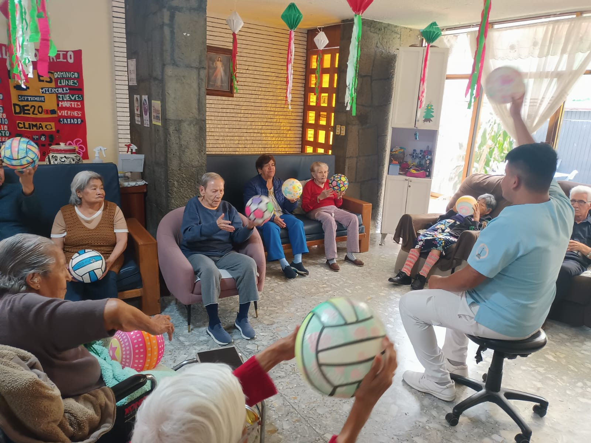

Cuerpo Académico Ciencias del Envejecimiento y Desarrollo Sostenible
UNIVERSIDAD ESTATAL DEL VALLE DE ECATEPEC
Licenciatura en Gerontología
CONVOCA
VIII Verano Internacional de Investigación Gerontológica 2025
“Gerontología Aplicada: su soporte en la praxis y la investigación”
PARTICIPAN:
- Investigadores
- Docentes
- Profesionales
- Tesistas
- Estudiantes de gerontología
- Profesionales interesados en el envejecimiento y la vejez
TEMÁTICAS
Pueden participar trabajos de cualquier área temática de gerontología,
siempre y cuando se apeguen al objetivo del VIII verano, es decir,
trabajos que den fundamento a la gerontología aplicada.
MODALIDADES
- Conferencias
- Libros
- Talleres
- Artículos publicados
- Tesis
- Avances de proyecto
- Investigación documental
SEDE: Universidad Estatal del Valle de Ecatepec
Fecha: 23-27 de junio 2025
Inscripciones hasta el 13 de junio de 2025
Inscripción gratuita
Informes e inscripciones:
verano.investigacion.uneve@gmail.com